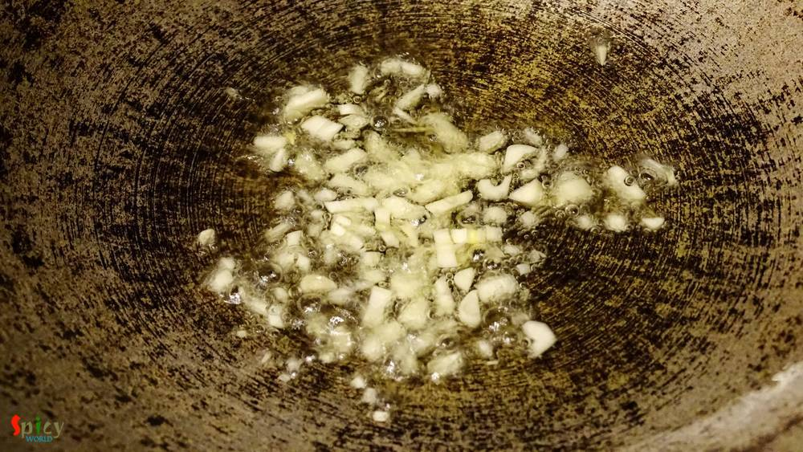

Simple and Easy Recipes
Gobi Manchurian / Cauliflower fritters in Brown sauce
© 2016 Spicy World, Published on: Jun 8, 2016
This dish is an indo-chinese item which is very popular and frequently ordered in restaurants of India. Gobi means cauliflower. The recipe is very similar to chicken manchurian (which I have already posted), except the key ingredient here is cauliflower, not chicken. You can make this dish with potatoes, soya granules or raw jackfruit also. Every single time it tastes delicious and goes best with fried rice or rumali roti. I made mine on dry side, but if you want this on gravy side, just add more water or vegetable stock. Both of them tastes incredible and you can serve them as starter or as maincourse also. Try this very easy recipe in your kitchen and let me know how it turns out for you.

Ingredients
- A cup of cauliflower florets.
- 3 - 4 Tablespoons of cornflour.
- 1 onion, finely chopped.
- Half capsicum, finely chopped.
- 3 green chilies, chopped.
- 2 Tablespoons of black pepper powder.
- 1 Tablespoon of chopped garlic.
- Pinch of msg (optional).
- Salt and sugar.
- 2 Tablespoons of tomato sauce.
- 2 Tablespoons of chilli sauce.
- 1 Teaspoon of dark soy sauce.
- Half Teaspoon of vinegar.
- Half cup of oil for frying.
- Some chopped coriander leaves / spring onion.
- Water.

Steps
Put cornflour, some salt, 1 Tablespoon of black pepper powder and half pinch of msg in a bowl.

Add water and make a semi thin batter.
Then wash the florets with water very well and dip them into the batter.
Drop the battered florets into the hot oil. Fry them for 5 - 7 minutes.
Do not make them too much golden.
Remove them from oil and keep aside.
To make the sauce, heat 2 Tablespoons of oil.
Saute chopped garlic in hot oil.
Then add chopped onion and capsicum with little salt. Cook for 5 minutes in high flame.
Then add chopped green chilies. Cook for a minute.
Now add tomato sauce, chilli sauce, soy sauce, vinegar, msg, 3 Tablespoons of water and a Teaspoon of sugar. Cook well for 5 minutes.
Then dump all the fried florets into the sauce. Give it a good mix on high flame for 3 minutes.

Turn off the heat, sprinkle chopped coriander leaves / spring onion and serve immediately.
Your gobi manchurian is ready ...
Serve this hot with fried rice or rumali roti ...
")